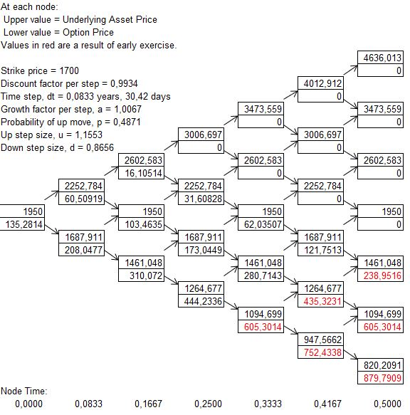

Ejercicios valoración de opciones¶
Valore la siguiente opción Put Americana con seis pasos: precio strike de $1.700 y vencimiento en seis meses. El activo subyacente tiene un precio actual de $1.950 con una volatilidad continua anual de 50%. La tasa libre de riesgo continua anual es de 8%.
¿En qué momentos en el tiempo se ejerce la opción?
Nota: Suponga inversionistas racionales.
Respuesta: En el cuarto, quinto y sexto mes.

Árbol Binomial¶
Realice la valoración de las opciones Call y Put por los siguientes métodos:
Árboles binomiales (Americanas) con 500 pasos.
Árboles binomiales (europeas) con 500 pasos.
Black-Scholes.
El precio actual del activo subyacente es de $3.800, la volatilidad anual es de 15%, tasa libre de riesgo local de 2% C.C.A. y tasa libre de riesgo extranjera de 0,35% C.C.A.
Las opciones tienen un vencimiento de tres meses y precio strike de $3.770.
Respuesta:
Call (Americana): $ 137,10. Árboles binomiales.
Put (Americana): $92,55. Árboles binomiales.
Call (europea): $137,10. Árboles binomiales.
Put (europea): $91,62. Árboles binomiales.
Call (europea): $137,09. Black-Scholes.
Put (europea): $91,61. Black-Scholes.
En la Bolsa de Valores se realizó una transacción de una opción Call sobre la TRM, la prima de la transacción fue de $100. El precio strike de la opción es de $3.820 y el vencimiento es de seis meses. Actualmente la TRM está en $3.800, la tasa libre de riesgo es de 2% C.C.A. y tasa libre de riesgo extranjera de 0,35% C.C.A. Con esta información, ¿Cuál es la volatilidad implícita del activo subyacente?
Nota: utilice el método de Black-Scholes.
Respuesta: 8,82% Anual.
De acuerdo con las transacciones registradas en la Bolsa de Valores, la volatilidad implícita para la TRM es de 10% anual. Las transacciones fueron opciones con vencimiento a seis meses. Con esta información se procede a valorar por el método de Black-Scholes la siguiente opción:
Opción Put con vencimiento a seis meses y precio strike de $3.820. La TRM es de $3.800, tasa libre de riesgo es de 2% C.C.A. y tasa libre de riesgo extranjera de 0,35% C.C.A.
Respuesta:
Put: $101,24.
Evalúe las siguientes estrategias de cobertura para cubrir 300.000 USD para dentro de un mes con una razón de cobertura del 90%:
Cobertura para compradores:
Estrategia Call con \(K_1\)
Estrategia Call con \(K_2\)
Estrategia Bull Call Spread.
Cobertura para vendedores:
Estrategia Put con \(K_1\)
Estrategia Put con \(K_2\)
Estrategia Bear Call Spread.
Las opciones son del tipo europea y los precios strike son: \(K_1\) de $3.500 y \(K_2\) de $3.600.
Realizar la valoración por el método de Black-Scholes con una tasa libre de riesgo local de 1,80% C.C.A y tasa libre de riesgo extranjera de 0,30% C.C.A. La TRM actual es de $3.500 y tiene una volatilidad continua anual de 12,17%.
Si el precio de la TRM al día de terminación de la cobertura es de $3.800, calcule los precios con cobertura después de primas y el total de primas que se paga o recibe en cada estrategia.
Respuesta:
Cobertura para compradores:
Estrategia Call con \(K_1\)
Primas: - $13.830.941.
Precio cobertura: $3.576,10.
Estrategia Call con \(K_2\)
Primas: - $4.289.395.
Precio cobertura: $3.634,30.
Estrategia Bull Call Spread:
Primas: - $9.541.547.
Precio cobertura: $3.741,81.
Cobertura para vendedores:
Estrategia Put con \(K_1\)
Primas: - $12.650.724.
Precio cobertura: $3.757,83.
Estrategia Put con \(K_2\)
Primas: - $30.068.708.
Precio cobertura: $3.699,77.
Estrategia Bear Call Spread:
Primas: $9.541.547.
Precio cobertura: $3.741,81.